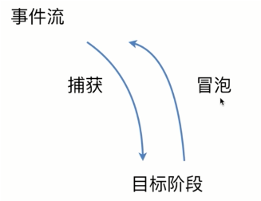
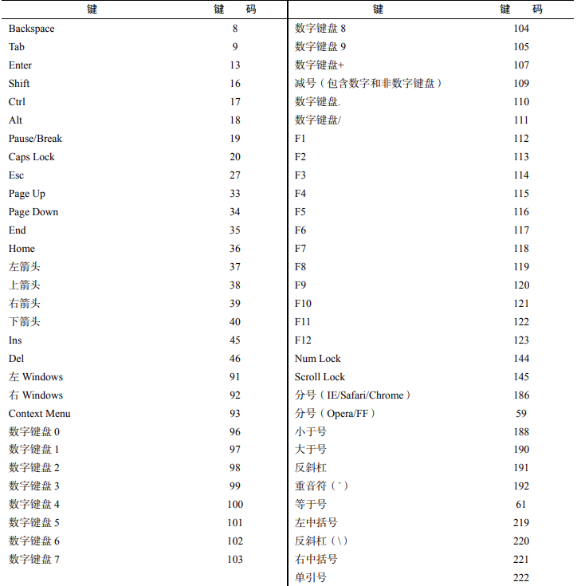

DOM事件机制
DOM 事件机制
事件
JavaScript 与 HTML 之间的交互是通过事件来实现的。事件就是文档或浏览器窗口中发生的一些特定的交互瞬间。
1 | |
事件三要素：
- 事件源：事件被触发的对象 –>按钮对象
- 事件类型：如何触发？触发什么事件？例如鼠标点击，键盘按下等…
- 事件处理程序：通过一个函数赋值的方式
执行事件的步骤：
- 获取事件源
- 注册事件（绑定事件）
- 采用函数赋值形式添加事件处理程序
常用事件：
用户点击鼠标时、网页加载后、图线加载后、鼠标移动至元素上时、输入字段被改变时、HTML 表单被提交时、用户敲击按键时······
事件流
一个事件发生后，会在子元素和父元素之间传播（propagation）。这种传播分成三个阶段。
（1）捕获阶段：事件从 window 对象自上而下向目标节点传播的阶段；
（2）目标阶段：真正的目标节点正在处理事件的阶段；
（3）冒泡阶段：事件从目标节点自下而上向 window 对象传播的阶段。

事件冒泡（IE 事件流）
事件被定义为从最具体的元素（文档树中最深的节点）开始触发，然后向上传播至没有那么具体的元素
1 | |
在点击页面中的 id 为 inner 的 div 元素，click 事件会以 div##inner—>div##center—>div##outer—>body—>html—>document 的顺序发生 (由内向外)。
现在浏览器中的事件会一直冒泡到 window 对象
阻止事件冒泡
DOM 事件默认提供一个 HTML DOM Event 对象，代表事件的状态，如事件在其中发生的元素、键盘按键的状态、鼠标的位置、鼠标按钮的状态。
事件通常与函数结合使用，函数不会在事件发生前被执行。
直接在对应的方法中使用 event.stopPropagation() 便可阻止事件冒泡
事件捕获（Netscape 事件流）
最不具体的节点应该最先收到事件，而最具体的节点应该最后收到事件，
事件捕获实际上是为了在事件到达最终目标前拦截事件。上个例子中的事件捕获的触发顺序 document—>html—>body—>div（由外向内）
事件处理程序
事件意味着用户或浏览器执行的某种动作。如单机（click）、加载（load）、鼠标悬停（mouserover）。为响应事件而调用的函数称为事件处理程序，事件处理程序名字以“on”开头。
HTML 事件处理程序
特定元素支持的每个事件都可以使用事件处理程序的名字以 HTML 属性的形式来指定。此时属性的值必须是能够执行的 JavaScript 代码。如要在按钮被点击时执行某些 JavaScript 代码，可以使用以下 HTML 属性：
1 | |
点击这个按钮后，控制台会输出一条消息。这种交互能力是通过为 onclick 属性指定 JavaScript 代码值来实现的。
因为属性的值是 JavaScript 代码，所以不能在未经转义的情况下使用 HTML 语法字符，比如和号（&)、双引号（”)、小于号（<) 和大于号（>)。此时，为了避免使用 HTML 实体，可以使用单引号代替双引号。如果确实需要使用双引号，则要把代码改成下面这样：
1 | |
DOM0 事件处理程序
在 JavaScript 中指定事件处理程序的传统方式是把一个函数赋值给（DOM 元素的）一个事件处理程序属性。这也是在第四代 Web 浏览器中开始支持的事件处理程序赋值方法，直到现在所有现代浏览器仍然都支持此方法，主要原因是简单。要使用 JavaScript 指定事件处理程序，必须先取得要操作对象的引用。每个元素 (包括 window 和 document) 都有通常小写的事件处理程序属性，比如 onclick。只要把这个属性赋值为一个函数即可。
1 | |
像这样使用 DOMO 方式为事件处理程序赋值时，所赋函数被视为元素的方法。因此，事件处理程序会在元素的作用域中运行，即 this 等于元素。
DOM2 事件处理程序
DOM2 Event 为事件处理程序的赋值和移除定义了两个方法。
这两个方法暴露在所有 DOM 节点上，它们接受 3 个参数：事件名、事件处理函数和一个布尔值，true 表示在捕获阶段调用事件处理程序，false（默认）表示在冒泡阶段调用事件处理程序。
IE 中使用 attachEvent() 和 detachEvent() 添加，触发顺序与添加顺序相反。
addEventListener()
1 | |
与 DOM0 方式类似，这个事件处理程序同样在被附加到元素的作用域中运行。使用 DOM2 方式的主要优势是可以为同一个事件添加多个事件处理程序（多个按顺序触发）。
removeEventListener()
通过 addEventListener() 添加的事件处理程序只能使用 removeEventListener() 并传入与添加时 同样的参数 来移除（意味着使用 addEventListener() 添加的匿名函数无法移除）。
1 | |
解决方案：
1 | |
事件对象
在 DOM 中发生事件时，所有相关信息都会被收集并存储在一个名为 event 的对象中。这个对象包含了一些基本信息，比如导致事件的元素、发生的事件类型，以及可能与特定事件相关的任何其他数据。例如，鼠标操作导致的事件会生成鼠标位置信息，而键盘操作导致的事件会生成与被按下的键有关的信息。所有浏览器都支持这个 event 对象，尽管支持方式不同。
注意：event 对象只在事件处理程序执行期间存在，一旦执行完毕，就会被销毁。
event
- eventPhase，当前所处的事件流阶段（1 捕获，2 到达目标，3 冒泡）。
- currentTarget，当前事件处理程序所在的元素。
- target，事件触发的目标元素。
- trusted，是否为浏览器生成的事件。
- type，事件触发的类型。
- bubbles，事件是否冒泡。
- cancelable，是否可以取消事件的默认行为。
- defaultPrevented，是否已调用 preventDefault。
- **preventDefault()**，取消事件的默认行为。
- **stopPropagation()**，用于取消所有后续事件捕获或事件冒泡。只有 bubbles 为 true 才可以调用这个方法。
- **stopImmediatePropagation()**，用于取消所有后续事件捕获或事件冒泡，并阻止调用任 何后续事件处理程序。
阻止默认事件发生
preventDefault() 方法： 用于阻止特定时间的默认动作。如链接的默认行为就是在被单击时导航到 href 属性指定的 URL 或是修改表单提交的默认事件。
1 | |
注意： 阻止事件默认行为与阻止事件冒泡是两个概念。
- 阻止事件默认行为：
event.preventDefault() - 阻止事件冒泡：
return false，在原生 JavaScript 中只会阻止默认行为，在 jQuery 中既阻止默认行为又防止对象冒泡。- W3C：
event.stopPropagation()
IE：event.cancelBubble = true
事件代理（事件委托）
由于事件会在冒泡阶段向上传播到父节点，因此可以把子节点的监听函数定义在父节点上，由父节点的监听函数统一处理多个子元素的事件。
事件委托的 根本原理：事件冒泡。
适用情况：当父级与子级有相同的事件处理程序需求时，绑定给子级即可。
1 | |
只要可行，就应该考虑只给 document 添加一个事件处理程序，通过它处理页面中所有某种类型的事件。
优点：
- document 对象随时可用，无需等待加载时间。
- 只绑定在一个 document 对象上，节省了 DOM 引用，节省了时间。
- 节省整个页面内存，降低内存消耗，提升整体性能。
最适合使用事件委托的事件包括：click、mousedown、mouseup、keydown 和 keypress。
事件类型
DOM3 Events 定义了如下事件类型。
- 用户界面事件（UIEvent)：涉及与 BOM 变互的通用浏览器事件。
- 焦点事件（FocusEvent)：在元素获得和失去焦点时触发。
- 鼠标事件（MouseEvent)：使用鼠标在页面上执行某些操作时触发。
- 滚轮事件（WheelEvent)：使用鼠标滚轮（或类似设备）时触发。
- 键盘事件（KeyboardEvent)：使用键盘在页面上执行某些操作时触发。
- 输入事件（InputEvent)
用户界面事件（UIEvent)
- load()
在 window 上当页面加载完成后触发，在窗套（<frameset>) 上当所有窗格（<frame>）都加载完成后触发，在<img>元素上当图片加载完成后触发，在<object>元素上当相应对象加载完成后触发。
1 | |
unload()
当页面完全卸载后在 window 上触发，当所有框架都卸载后在框架集上触发，当嵌入的内容卸载完毕后在<object>上触发。select()
在文本框（<input>或 textarea）上当用户选择了一个或多个字符时触发。
1 | |
- resize()
在 window 或窗格上当窗口或窗格被缩放时触发。
1 | |
标准模式，发生在 <html> 元素上；混杂模式，发生在 <body> 元素上。
1 | |
- scroll()
当用户滚动包含滚动条的元素时在元素上触发。<body>元素包含已加载页面的滚动条。
大多数 HTML 事件与 window 对象和表单控件有关。
1 | |
焦点事件（FocusEvent)
焦点事件触发顺序：
- focusout，失去焦点的元素上
- focusin，获得焦点的元素上
- blur，失去焦点的元素上
- focus，获得焦点的元素上
blur
当元素失去焦点时触发。这个事件不冒泡，所有浏览器都支持。focus
当元素获得焦点时触发。这个事件不冒泡，所有浏览器都支持。
1 | |
focusin
当元素获得焦点时触发。这个事件是 focus 的冒泡版。focusout
当元素失去焦点时触发。这个事件是 blur 的冒泡版。
鼠标事件（MouseEvent) 和滚轮事件（WheelEvent)
- click
在用户单击鼠标主键（通常是左键）或按键盘回车键时触发。这主要是基于无障碍的考虑，让键盘和鼠标都可以触发 onclick 事件处理程序。 - dblclick
在用户双击鼠标主键（通常是左键）时触发。这个事件不是在 DOM2 Events 中定义的，但得到了很好的支持，DOM3 Events 将其进行了标准化。 - mousedown
在用户按下任意鼠标键时触发。这个事件不能通过键盘触发。 - mouseenter
在用户把鼠标光标从元素外部移到元素内部时触发。这个 事件不冒泡，也不会在光标经过后代元素时触发。mouseenter 事件不是在 DOM2 Events 中定义的，而是 DOM3 Events 中新增的事件。 - mouseleave
在用户把鼠标光标从元素内部移到元素外部时触发。这个 事件不冒泡，也不会在光标经过后代元素时触发。mouseleave 事件不是在 DOM2 Events 中定义的，而是 DOM3 Events 中新增的事件。 - mousemove
在鼠标光标在元素上移动时反复触发。这个事件不能通过键盘触发。 - mouseout
在用户把鼠标光标从一个元素移到另一个元素上时触发。移到的元素可以是原始元素的外部元素，也可以是原始元素的子元素。这个事件不能通过键盘触发。 - mouseover
在用户把鼠标光标从元素外部移到元素内部时触发。这个事件不能通过键盘触发。 - mouseup
在用户释放鼠标键时触发。这个事件不能通过键盘触发。 - mousewheel
鼠标滚轮事件
注意：click 和 dblclick 事件依赖 mousedown 和 mouseup 事件的触发。
鼠标坐标
鼠标在 客户端视口 的坐标：(event.clientX, event.clientY)；
鼠标在 页面 的坐标：(event.pageX, event.pageY)；
鼠标在 屏幕 的坐标：(event.screenX, event.screentY)。
修饰键
- Shift—>event.shiftKey
- Ctrl—>event.ctrlKey
- Alt—>event.altKey
- Meta—>event.metaKey
键盘事件（KeyboardEvent) 和输入事件（InputEvent)
- keydown：用户按下键盘上某个键时触发，而且持续按住会重复触发。
- keypress：用户按下键盘上某个键并 产生字符 时触发，而且持续按住会重复触发。
- keyup：用户释放键盘上某个键时触发。
- textInput：在文本插入文本框之前会触发 textInput 事件。
修饰键
- Shift—>event.shiftKey
- Ctrl—>event.ctrlKey
- Alt—>event.altKey
- Meta—>event.metaKey
1 | |
键码表

HTML5 事件
- contextmenu，上下文菜单事件，搭配 click 隐藏菜单。document。
- DOMCententLoaded，在 DOM 构建完成后触发，相比于 load 事件，不需要等待图片、JavaScript 等加载完成。document 或 window。
- readystatechange，页面加载时的状态信息。与 load 事件的先后顺序不定，其各状态的顺序也不一定。
- beforeunload，window 上触发，显示弹框。document。
1 | |
- pageshow 和 pagehide，在页面显示和隐藏时触发，不论是否来自往返缓存中（缓存中 load 事件不触发）。添加在 window 上。 event.persisted 表示是否来自往返缓存。注册 onunload 事件不会进入往返缓存。
- hashchange，散列值发生变化时触发，添加在 window 上。